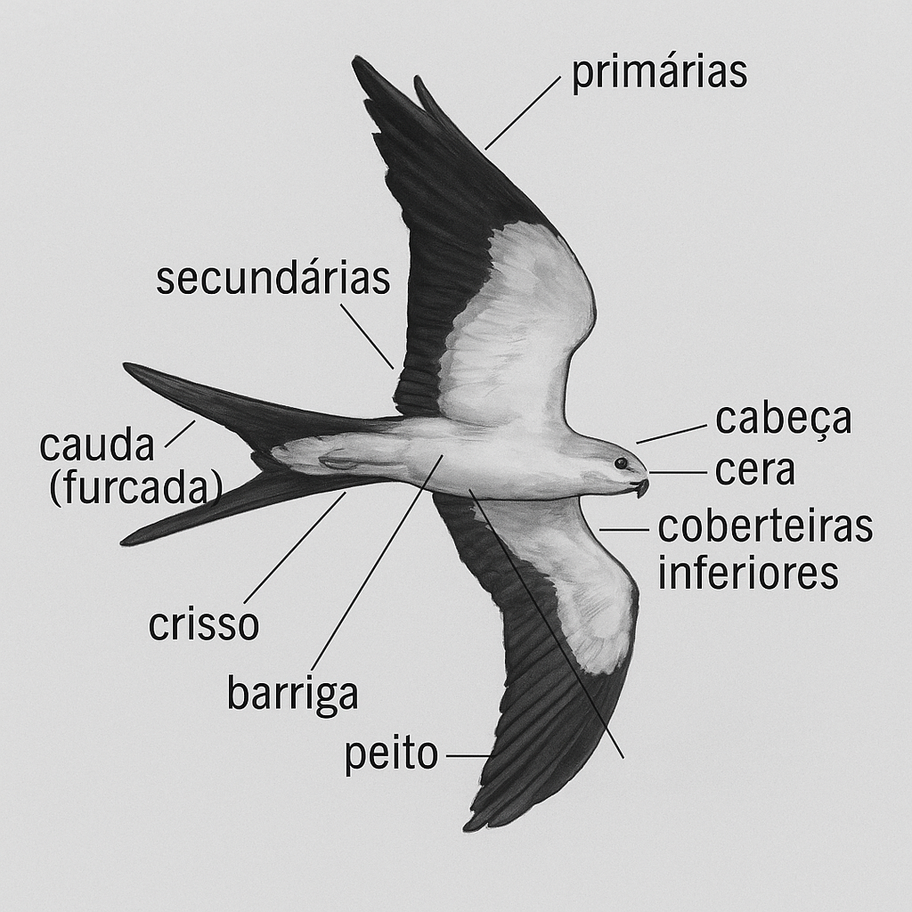
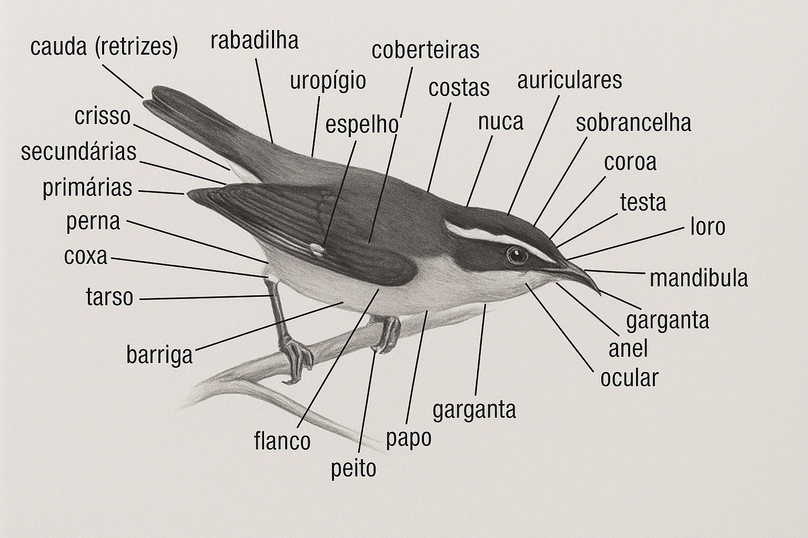
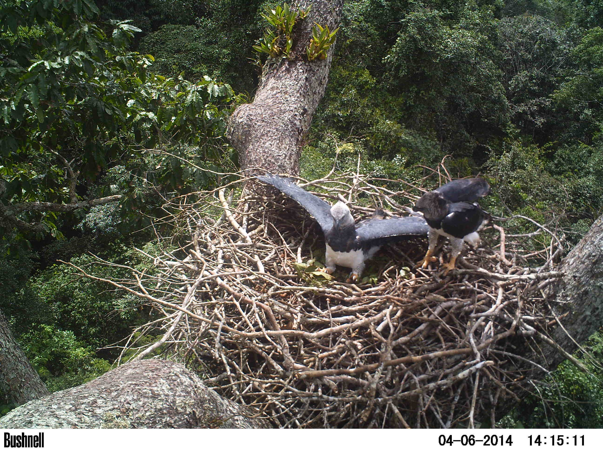
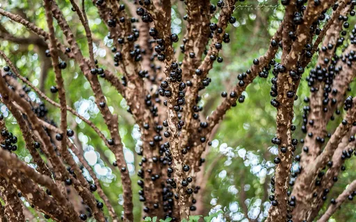
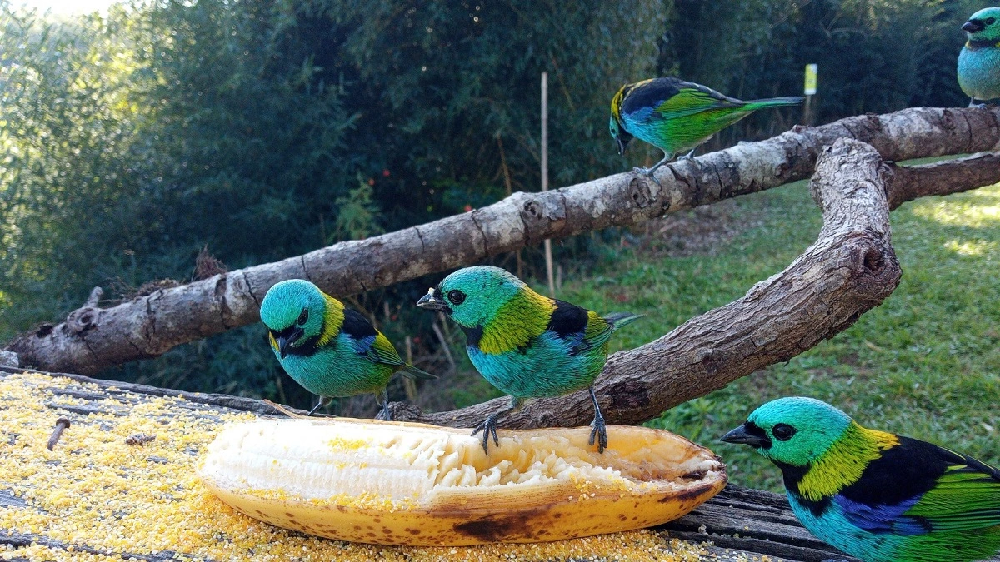

Descubra as aves do Brasil
Com uma fauna de 1902 espécies, o Brasil é um dos três países do mundo mais ricos em aves e está repleto de espécies espetaculares, muitas delas exclusivas. Por isso, é um lugar privilegiado para os observadores de aves, prática que se popularizou no país na última década e que fascina cada vez mais brasileiros.
Observar aves é divertido e faz bem ao ambiente
Também conhecida como passarinhar, birdwatching ou birding, a observação de aves pode ser praticada por pessoas de qualquer idade e condição física. É uma forma de lazer que envolve o contato com a natureza, proporciona bem-estar e relaxa a mente. As saídas em grupo propiciam a convivência familiar e novas amizades, e permitem compartilhar experiências e momentos agradáveis.
Além disso, essa atividade nos ensina muito sobre o ambiente e o modo como as pessoas se relacionam com ele. O turismo de observação de aves constitui, ainda, uma fonte sustentável de renda que beneficia comunidades dos locais visitados pelos birdwatchers e ajuda a proteger os ambientes naturais.
Os observadores podem fornecer informações importantes para ornitólogos e ecólogos. No site WikiAves, por exemplo, as fotos de milhares de fotógrafos ajudam os cientistas a entender melhor a ocorrência das aves do Brasil.
Como observar
Se possível, use binóculos (de 7 a 10 aumentos) ou cameras, que ampliam a imagem da ave e permitem ver mais detalhes. Ao observar, caminhe devagar, atente à vegetação e ao céu, e seja silencioso. Em geral, há mais aves em atividade de manhãzinha, mas mesmo que você acorde tarde pode ver espécies interessantes, ainda que em menor número.
No Sudeste do Brasil pode-se passarinhar o ano todo, a melhor época, porém, é setembro e outubro, quando as aves estão criando e são mais ativas. Muitos birdwatchers dedicam-se também à fotografia de aves. Você encontra informações sobre equipamentos e técnicas na internet e em grupos especializados nas redes sociais.

Identificando as aves
Use varios recursos para identificar aves como sites app e livros. Encontre neles os grupos de silhueta parecida à que procura (por exemplo, gaviões, beija-flores, saíras etc.). Compare entre si as ilustrações e fotos de espécies semelhantes à que deseja identificar. Preste atenção às características descritas nos textos.
Veja abaixo os nomes das partes das aves conhecê-los facilita identificar as aves. Depois, analise os mapas e veja se o local de sua observação está dentro da área onde uma dada espécie ocorre.  
Outro modo de identificar as aves é pela voz, pois muitas são mais ouvidas que vistas. Visite sites como o WikiAves ou o Xeno-canto, que têm grandes acervos de gravações de vozes.
Tecnologia em campo
Os birdwatchers dispõem de inúmeros recursos tecnológicos para uso em campo. Com as câmeras fotográficas digitais cada vez mais acessíveis. A fotografia de aves tornou-se muito popular no Brasil.
Aparelhos como smartphones e gravadores digitais são usados para gravar as aves e para tocar gravações e atraí-las, facilitando a observação (essa técnica é chamada de playback). Eles também podem ser carregados com aplicativos que são guias digitais para a identificação de aves.
Avanços tecnológicos recentes abriram perspectivas incríveis para a observação de aves à distância. Armadilhas fotográficas com detectores de movimento, instaladas em trilhas e cevas no meio do mato, registram aves e outros animais que passam. Webcams instaladas em comedouros e ninhos transmitem em tempo real a atividade das aves, para internautas do mundo todo, sem interferir em seu comportamento.
Existem câmeras e binóculos com GPS, que registram automaticamente a posição onde foi observada uma dada ave, e ainda com gravadores de áudio e vídeo acoplados. Abaixo cameratrap em ninho de Harpia
Trazendo as aves para perto de você
Um ambiente hospitaleiro atrai mais aves. Quanto mais vegetação, mais aves frequentam uma área, pois há mais alimento, abrigo e lugar para a nidificação.
Pitangueira, jabuticabeira, aroeira, jerivá, guaçatonga, crindiúva são algumas árvores da Região Sudeste cujos frutos as aves comem. Plantas como brinco-de-princesa, mulungu, paineira, bromélias, helicônias e ipês dão flores que os beija-flores e outras aves vão visitar em busca de néctar e de bichinhos.
Há inúmeras espécies vegetais nativas que atraem os insetos dos quais as aves insetívoras se alimentam, como a sibipiruna e a caliandra.
Um recanto para as aves
Enriqueça o ambiente com plantas nativas que atraem as aves, como as citadas acima. Pode ser em seu jardim ou sua varanda, nas áreas verdes de seu prédio, nas calçadas de seu bairro, na escola, em praças perto de sua casa ou na chácara ou fazenda de sua família.
Você pode ter até um telhado verde — uma horta ou jardim plantados numa camada de terra ou substrato especial que reveste o alto de prédios e casas. Além de aumentar o conforto térmico dentro de casa, um telhado verde pode virar um paraíso para aves que se alimentam pelo chão.
E se plantar espécies que fornecem alimento, você pode ter 15 ou 20 espécies de aves em seu próprio telhado!
As aves também são atraídas com a oferta de alimentos e de água para beber e para o banho. Comedouros com frutas ou sementes, bebedouros com água açucarada, recipientes com água para o banho — tudo isso pode ser colocado até na janela de um apartamento.
Explore os recursos da internet
VISITE SITES sobre observação de aves e ornitologia, bem como webcams de observação on-line.
PARTICIPE DE GRUPOS DE DISCUSSÃO ONLINE sobre observação de aves, nos quais é possível tirar dúvidas e partilhar informações.
COLABORE com bancos de dados (WikiAves, Xeno-canto, Táxeus, e-Birds), nos quais suas informações ajudarão cientistas e outros observadores do mundo todo.